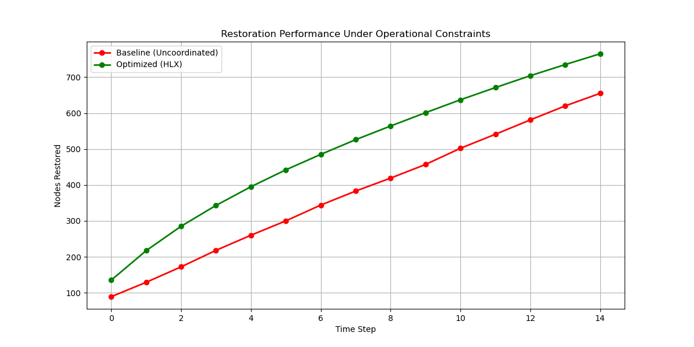
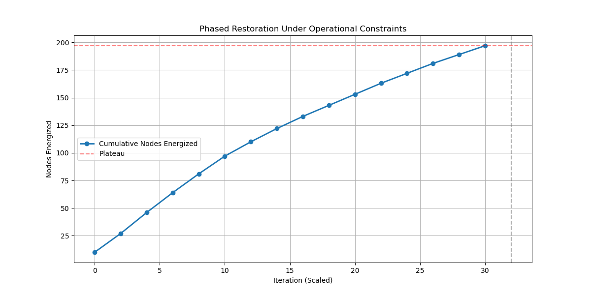
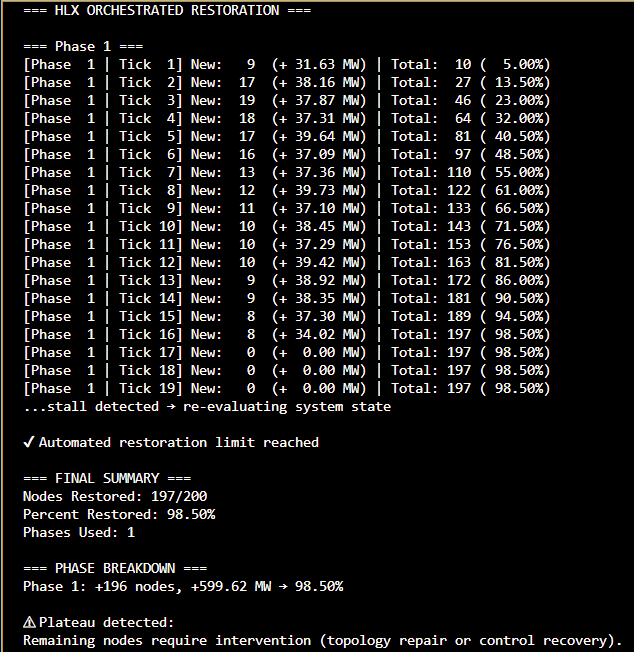
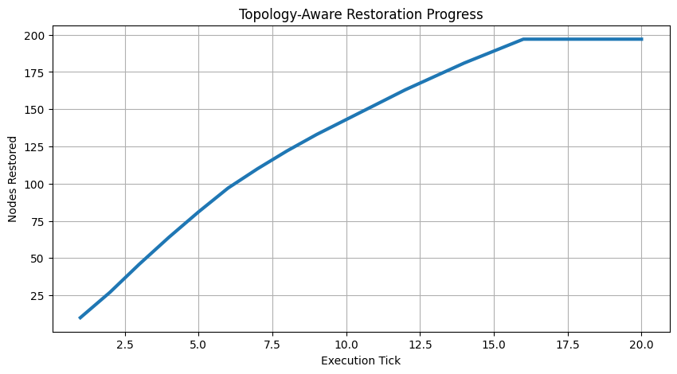

Nexus Grid demonstration environments model topology-aware orchestration, restoration sequencing, operational propagation, replay behavior, and constrained infrastructure coordination across modern transmission systems.
Demonstration environments focused on phased restoration sequencing, constrained recovery behavior, topology-aware propagation, and operational continuity modeling.
Infrastructure propagation simulations designed to model dependency-aware execution, localized replay behavior, constrained coordination boundaries, and operational spread dynamics.
Structured replay demonstrations supporting operational traceability, restoration visibility, sequence reconstruction, and infrastructure review workflows.
This demonstration models large-scale restoration behavior under constrained operating conditions while comparing uncoordinated recovery sequencing against topology-aware orchestration strategies.
The simulation environment emphasizes dependency-aware operational coordination, bounded propagation behavior, restoration sequencing, and constrained execution dynamics rather than unrestricted infrastructure-wide recomputation.

Restoration environments rarely propagate uniformly across infrastructure systems. Recovery sequencing frequently slows as dependency boundaries, operational constraints, topology limitations, and coordination bottlenecks emerge.
The demonstration environment models phased restoration progression, constrained propagation behavior, operational plateau detection, and targeted intervention boundaries during evolving infrastructure recovery conditions.

Demonstration environments generate structured operational traces designed to expose restoration progression, propagation behavior, replay sequencing, intervention thresholds, and constrained recovery dynamics.
Rather than abstract simulation output alone, the runtime exposes staged operational progression, restoration limits, topology-aware replay behavior, and infrastructure coordination boundaries under evolving system conditions.

Modern transmission environments increasingly require operational visibility systems capable of supporting replay traceability, restoration review workflows, propagation awareness, sequencing visibility, and continuity-sensitive infrastructure coordination.
The demonstration architecture models replay-oriented operational behavior, dependency-aware coordination, propagation locality, and structured restoration sequencing while preserving operational trace visibility across constrained execution environments.
